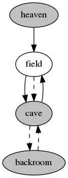

How to program a text adventure in C
by Ruud Helderman
<r.helderman@hccnet.nl>
Licensed under
MIT License
20. Combat
Since the early classics were influenced by
fantasy,
it is not surprising that many text-based games adopted elements from
RPG games
like
Dungeons & Dragons.
Multi-player games thrive on role play and combat; you see that in every
MUD.
Single-player games on the other hand, typically focus on puzzle solving.
The boundaries are not always that sharp.
In the early days, before the rise of
the internet,
there were plenty of single-player games that featured combat,
though often in a simplified form.
It is easy enough to implement a ‘kill’ command that will dispose of any actors standing in your way.
| guard->health--; /* do this often enough and he's dead */
|
But of course there is a lot more to it.
Some weapons may be more effective than others.
Some opponents may be tougher than others.
Both the player and non-player characters stand a better chance in combat
when being healthy, skilled and well-equiped.
A lot can be learned from
tabletop role-playing games,
where
statistics
determine the chances of survival.
Each stat can be implemented as an attribute in our ‘object’ structure;
this was discussed in chapter 10.
A combat-related command should use these stats
in a ‘damage formula’
that determines the impact of the command on the actors involved.
| guard->health -= calculate_damage(player, guard);
|
Random
Traditionally, some uncertainty is built into a damage formula.
Tabletop games have
dice,
computer games have a
random number generator.
Please note that ‘randomness’ may cause trouble with the
‘roll-forward’ savegame technique proposed in chapter 16.
Roll-forward demands repeatability.
When saving a game, you expect the exact same game state when restoring.
But different random numbers might completely change
the outcome of battles that took place prior to saving.
Fortunately, computers typically use
pseudorandom number generators.
Reproducibility is one of their big advantages.
Just make sure to seed the PRNG with the same fixed number at the start of every game.
If you prefer to have a uniquely random game experience for every new game session
(though I doubt that will be relevant for a text adventure,
where a player is typically dedicated to a single ongoing session),
then at least make sure the seed is stored as part of the savegame.
This applies not only to combat, but to everything that is random,
for example objects positioned randomly on the map,
or NPCs moving randomly between locations.
Real-time vs turn based
When implementing combat in a text adventure,
you will have to choose between
real-time
and
turn-based.
In multi-player games, turn-based only makes sense when playing offline (as in
play-by-mail).
Online players do not want to be kept waiting for other players to respond,
which is why a
MUD
is typically played in real time.
This brings a few coding challenges; in particular
synchronization.
It’s also important to implement some kind of
cooldown,
to prevent things like combat to turn into a
speed typing contest.
Single-player games are typically turn-based.
Computers respond faster than humans,
so a human player will not be frustrated by the time it takes
for a non-player character to respond to the player’s actions.
Turn-based has the advantage of not rushing players,
giving them all the time in the world to think about their next move,
while at the same time offering instant feedback
at every attempt from the player to progress through the game.
Turn-based does not mean there is no notion of time;
it’s just not real time.
Every command from the user is a ‘turn’ in the game.
During that turn, some ‘game time’ passes,
which gives other (non-player) characters an equal opportunity to take action.
For example, after the player has taken a swing at an orc,
it’s the orc’s turn to retaliate.
In its simplest form, every command represents an equal time slice.
But it is also possible to make certain commands ‘consume’ more time than others,
giving the rest of the world more time to do their ‘thing’ in response.
For example, the player may be given the opportunity
to travel from one town to another with a single ‘go’ command,
but that may cost the player so much game time,
that night will fall halfway through,
bringing out nasty night crawlers.
‘Long’ commands may also consume more resources, like
food, water, physical strength, and fuel for a lamp.
At the very least, I would recommend to let ‘supportive’ commands,
for example ‘help’, ‘save’, ‘load’, consume zero game time.
These commands are not part of the storyline;
it would be unfair to penalize the player for using them.
The same thing goes for typos and other input that is rejected by the parser;
this is supposed to be an adventure, not a
spelling bee.
| The orc looks very angry.
--> hit orc
You hit the orc on the head.
The orc is dazed, and for a moment, is defenseless.
--> stabbb orc
I don't know how to 'stabbb'.
The orc recovers and strikes back.
You are dead.
--> *** rage quit ***
|
Please note that in battle, a return action
is not necessarily implied by the player’s last command.
Once enraged, the orc is likely to keep responding with violence,
regardless of what the player’s subsequent commands will be.
| --> hit orc
You hit the orc; orc loses 10 HP.
Orc strikes back; you lose 10 HP.
--> give flowers to orc
Orc accepts your gift and makes a flower basket out of it.
--> mood swings???
|
Therefore, it is best to implement all actions from ‘the rest of the world’
not as part of any user command, but as a separate step in the main loop.
Remember the main loop from chapter 2?
We will just make an additional function call there.
| Sample output |
|---|
Welcome to Little Cave Adventure.
You are in an open field.
You see:
a silver coin
a burly guard
a cave entrance to the east
dense forest all around
a lamp
a wooden club
a dagger
--> get club
You pick up a wooden club.
--> get dagger
You pick up a dagger.
--> get lamp
You pick up a lamp.
--> attack
You hit a burly guard with a dagger.
You are hit by a burly guard, with bare hands.
--> attack with club
You hit a burly guard with a wooden club.
--> drop dagger
You drop a dagger.
You see a burly guard pick up a dagger.
--> attack guard
You hit a burly guard with a wooden club.
You are hit by a burly guard, with a dagger.
--> attack with dagger
You are not holding any dagger.
--> attack with lamp
You try to hit a burly guard with a lamp, but you miss.
--> wait
Some time passes...
You are hit by a burly guard, with a dagger.
--> quit
Bye!
|
| main.c |
- #include <stdbool.h>
- #include <stdio.h>
- #include <string.h>
- #include "expand.h"
- #include "parsexec.h"
- #include "turn.h"
- static char input[100] = "look around";
- static bool getFromFP(FILE *fp)
- {
- bool ok = fgets(input, sizeof input, fp) != NULL;
- if (ok) input[strcspn(input, "\n")] = '\0';
- return ok;
- }
- static bool getInput(const char *filename)
- {
- static FILE *fp = NULL;
- bool ok;
- if (fp == NULL)
- {
- if (filename != NULL) fp = fopen(filename, "rt");
- if (fp == NULL) fp = stdin;
- }
- else if (fp == stdin && filename != NULL)
- {
- FILE *out = fopen(filename, "at");
- if (out != NULL)
- {
- fprintf(out, "%s\n", input);
- fclose(out);
- }
- }
- printf("\n--> ");
- ok = getFromFP(fp);
- if (fp != stdin)
- {
- if (ok)
- {
- printf("%s\n", input);
- }
- else
- {
- fclose(fp);
- ok = getFromFP(fp = stdin);
- }
- }
- return ok;
- }
- int main(int argc, char *argv[])
- {
- (void)argc;
- printf("Welcome to Little Cave Adventure.\n");
- while (turn(parseAndExecute(expand(input, sizeof input))) &&
- getInput(argv[1]));
- printf("\nBye!\n");
- return 0;
- }
|
Explanation:
- Line 6:
another new module, shown below.
- Line 56:
directly after calling function parseAndExecute,
we will call a new function named ‘turn’.
The return value of parseAndExecute is passed into turn as a parameter.
Function ‘turn’ implements
everything that is going on around the player.
In a multi-player game, this would include activity of other human players.
A single-player game only has non-player characters,
but of course there could be many other processes.
A typical example is a lamp that is slowly dying.
Every turn with the lamp being on, it will consume oil or battery power.
Once everything is consumed, the light will dim.
Other examples are forces of nature: a storm, a flood, a volcanic eruption.
| turn.h |
- extern bool turn(int time);
|
| turn.c |
- #include <stdbool.h>
- #include <stdio.h>
- #include "object.h"
- #include "misc.h"
- #include "location.h"
- #include "damage.h"
- static OBJECT *findBestWeaponAround(OBJECT *actor, OBJECT *weapon)
- {
- OBJECT *obj;
- for (obj = objs; obj < endOfObjs; obj++)
- {
- if (isHolding(actor->location, obj) && obj->impact < weapon->impact)
- {
- weapon = obj;
- }
- }
- return weapon;
- }
- static void actorTakingTurn(OBJECT *actor)
- {
- if (isHolding(player->location, actor) && actor->trust < 0)
- {
- OBJECT *weapon = getOptimalWeapon(actor);
- OBJECT *best = findBestWeaponAround(actor, weapon);
- if (weapon == best)
- {
- dealDamage(actor, weapon, player);
- }
- else
- {
- best->location = actor;
- printf("You see %s pick up %s.\n",
- actor->description, best->description);
- }
- }
- }
- static void depleteLight(OBJECT *obj, int time)
- {
- if ((obj->light -= time) <= 0 &&
- (isHolding(player, obj) || isHolding(player->location, obj)))
- {
- printf("The light of %s dies out.\n", obj->description);
- }
- }
- bool turn(int time)
- {
- if (time > 0)
- {
- bool originallyLit = isLit(player->location);
- OBJECT *obj, *originalLocation = player->location;
- for (obj = objs; obj < endOfObjs; obj++)
- {
- if (validObject(obj) && obj->location != NULL)
- {
- if (obj->health > 0) actorTakingTurn(obj);
- if (obj->light > 0) depleteLight(obj, time);
- }
- }
- if (player->health <= 0)
- {
- printf("You have died. You rise up to a more peaceful place...\n");
- player->location = heaven;
- player->health = 100;
- for (obj = objs; obj < endOfObjs; obj++)
- {
- if (obj->location == player) obj->location = field;
- }
- }
- if (originallyLit != isLit(player->location) ||
- originalLocation != player->location)
- {
- executeLookAround();
- }
- }
- return time >= 0;
- }
|
Explanation:
- Line 8-19:
this function gives non-player characters a little bit of
artificial intelligence.
An NPC will pick up a more powerful weapon, if any, before attacking.
This may not be the best tactic
in situations where a swift attack would be beneficial.
To make the NPC more intelligent, improve the function
by making a more complex decision tree involving more attributes.
- Line 23:
non-player characters will only be aggressive
when their ‘trust’ towards the player is negative.
This is a new attribute that is introduced below.
- Line 25:
start off taking the most powerful weapon the NPC is carrying.
- Line 26:
try to find an even more powerful weapon in NPC’s surroundings.
- Line 27:
if findBestWeaponAround is unable to find a better weapon,
then it will simply return the original weapon
(the one passed in as a parameter).
- Line 29:
the NPC is attacking.
- Line 33:
the NPC picks up the new weapon.
This ends NPC’s turn;
NPC will have to wait until the next turn to attack.
- Line 42-46:
each lamp in the game, when lit, will slowly consume its fuel.
Every turn, property light is decreased by an amount
that equals the time passed.
This will happen regardless of where the lamp is.
The player will be notified once all fuel has been consumed,
but this only happens if the lamp is present at player’s location.
Of course, it is also possible to give an early warning, for example
“the lamp flickers” when light drops below 10.
- Line 49, 51, 79:
time, passed in as a parameter, is typically 1 in this game,
meaning a single unit of time has passed.
There are two special values: 0 and -1.
Zero means the player did not take a turn
(for example because no valid command was entered),
so we let the surrounding world skip its turn too.
A negative number (-1) means the user wants to quit the program.
- Line 55-62:
give every object a chance to do its thing.
But only if that object exists,
i.e. its condition function returns true (see chapter 11),
and its location is not NULL (see chapter 12 and 15).
This helps prevent the lamp from burning fuel while it’s off.
- Line 63:
when player’s health hits zero, player dies.
- Line 65-67:
As explained in chapter 2, I like to give the player another chance.
Health is restored, and the player is moved to a ‘respawn point’.
I made a dedicated location for that, named ‘little heaven’.
Your quest does not end there;
I gave heaven a portal that will transport the player back to the field.
This portal is just a straightforward ‘passage’ (see chapter 6).
You can find heaven and portal in object.txt.
- Line 68-71:
Contrary to what the ancient pharaos believed,
you are going to heaven empty-handed.
Here, all your possessions are being moved to the field.
This makes it very easy for the player to reclaim them
after going through the portal.
Of course, we could also move each object back to its original location
(you may want to add an attribute home to OBJECT),
or make it even more challenging by moving them to random locations.
Do be careful with objects that are required to make progress through the game;
moving a key to a location behind the door it unlocks,
could make the quest impossible.
- Line 73-77:
It is possible player’s surroundings change
due to circumstances beyond player’s control.
For example, player may be transported to a different location (line 66),
or it may suddenly become dark (line 45).
That warrants the game automatically giving an updated look around.
Functions dealDamage and getOptimalWeapon
are implemented in the following module.
Separating them from turn.c makes sense,
because we will need the same functionality once again
as we implement an ‘attack’ command
by the end of this chapter.
| damage.h |
- extern void dealDamage(OBJECT *attacker, OBJECT *weapon, OBJECT *victim);
- extern OBJECT *getOptimalWeapon(OBJECT *attacker);
|
| damage.c |
- #include <stdbool.h>
- #include <stdlib.h>
- #include <stdio.h>
- #include "object.h"
- #include "misc.h"
- static void describeAttack(OBJECT *attacker, OBJECT *victim,
- const char *weaponDescription)
- {
- if (attacker == player)
- {
- printf("You hit %s with %s.\n", victim->description, weaponDescription);
- }
- else if (victim == player)
- {
- printf("You are hit by %s, with %s.\n",
- attacker->description, weaponDescription);
- }
- else
- {
- printf("You see %s being hit by %s, with %s.\n",
- victim->description, attacker->description, weaponDescription);
- }
- }
- static void describeDeath(OBJECT *attacker, OBJECT *victim)
- {
- if (attacker == player)
- {
- printf("You have slain %s.\n", victim->description);
- }
- else if (victim == player)
- {
- printf("You have been slain by %s.\n", attacker->description);
- }
- else
- {
- printf("You see %s being slain by %s.\n",
- victim->description, attacker->description);
- }
- }
- static void describeAlreadyDead(OBJECT *victim)
- {
- if (victim == player)
- {
- printf("It has little effect, since you were already dead.\n");
- }
- else
- {
- printf("It has little effect, since %s was already dead.\n",
- victim->description);
- }
- }
- void dealDamage(OBJECT *attacker, OBJECT *weapon, OBJECT *victim)
- {
- const char *weaponDescription = weapon == attacker ? "bare hands"
- : weapon->description;
- int damage = (rand() % 6) * weapon->impact * attacker->health / 100;
- if (damage < 0)
- {
- describeAttack(attacker, victim, weaponDescription);
- if (victim->health <= 0)
- {
- describeAlreadyDead(victim);
- }
- else
- {
- victim->health += damage;
- if (victim->health <= 0)
- {
- victim->health = 0;
- describeDeath(attacker, victim);
- }
- if (attacker == player)
- {
- victim->trust--;
- }
- }
- }
- else if (attacker == player)
- {
- printf("You try to hit %s with %s, but you miss.\n",
- victim->description, weaponDescription);
- }
- }
- OBJECT *getOptimalWeapon(OBJECT *attacker)
- {
- OBJECT *obj, *weapon = attacker;
- for (obj = objs; obj < endOfObjs; obj++)
- {
- if (isHolding(attacker, obj) && obj->impact < weapon->impact)
- {
- weapon = obj;
- }
- }
- return weapon;
- }
|
Explanation:
- Line 7-24:
a helper function that generates descriptive text
about attacks taking place during combat.
This covers player attacking NPC (line 12),
NPC attacking player (lines 16-17)
and even NPC attacking NPC (lines 21-22).
The latter could be useful in a game
where the player can team up with friendly NPCs.
- Line 26-41:
another helper function, this time to give descriptive text
about a character dying in combat.
As in the previous function,
attacker and victim can be NPC as well as player.
- Line 43-54:
one more helper function,
which could be useful in a fight involving three or more characters,
where a single character might suffer multiple blows within a single turn.
- Line 60:
this is the ‘damage formula’.
By convention, I will let ‘damage’ be a negative number,
reserving positive numbers for actions
that have a positive effect on a character’s health
(e.g. drinking a healing potion).
- Line 61:
damage has a 1 to 6 chance of being zero;
even more so if attacker and weapon are too weak.
If damage is zero, then execution will continue on line 82,
where we will explain the attack had no effect.
- Line 78:
attacking an NPC has a (negative) effect not only on health,
but also on the NPC’s trust towards the player.
This will have its effect on the NPC’s behavior towards the player.
We already saw an example of this in turn.c.
- Line 82:
we should respond to every command from the player,
but it is not necessary to apologize
for every missed opportunity by a NPC to deal damage.
- Line 94:
you may already have noticed the weapon’s ‘impact’
(another new attribute) as part of the damage formula (line 60).
As explained, we will be using negative numbers.
This explains why there is a ‘less than’ operator here:
the best weapon is the one with the smallest (most negative) impact.
Now that we have given other characters the means to attack the player,
it’s time to let the player return the favor!
| parsexec.c |
- #include <ctype.h>
- #include <stdbool.h>
- #include <stdio.h>
- #include "object.h"
- #include "misc.h"
- #include "match.h"
- #include "location.h"
- #include "inventory.h"
- #include "inventory2.h"
- #include "openclose.h"
- #include "onoff.h"
- #include "talk.h"
- #include "attack.h"
- typedef struct
- {
- const char *pattern;
- int (*function)(void);
- } COMMAND;
- static int executeQuit(void)
- {
- return -1;
- }
- static int executeNoMatch(void)
- {
- const char *src = *params;
- if (*src != '\0')
- {
- printf("I don't know how to '");
- while (*src != '\0' && !isspace(*src)) putchar(*src++);
- printf("'.\n");
- }
- return 0;
- }
- static int executeWait(void)
- {
- printf("Some time passes...\n");
- return 1;
- }
- int parseAndExecute(const char *input)
- {
- static const COMMAND commands[] =
- {
- { "quit" , executeQuit },
- { "look" , executeLookAround },
- { "look around" , executeLookAround },
- { "look at A" , executeLook },
- { "look A" , executeLook },
- { "examine A" , executeLook },
- { "go to A" , executeGo },
- { "go A" , executeGo },
- { "get A from B" , executeGetFrom },
- { "get A" , executeGet },
- { "put A in B" , executePutIn },
- { "drop A in B" , executePutIn },
- { "drop A" , executeDrop },
- { "ask A from B" , executeAskFrom },
- { "ask A" , executeAsk },
- { "give A to B" , executeGiveTo },
- { "give A" , executeGive },
- { "inventory" , executeInventory },
- { "open A" , executeOpen },
- { "close A" , executeClose },
- { "lock A" , executeLock },
- { "unlock A" , executeUnlock },
- { "turn on A" , executeTurnOn },
- { "turn off A" , executeTurnOff },
- { "turn A on" , executeTurnOn },
- { "turn A off" , executeTurnOff },
- { "talk with B about A" , executeTalkTo },
- { "talk about A with B" , executeTalkTo },
- { "talk about A" , executeTalk },
- { "talk A" , executeTalk },
- { "attack with B" , executeAttack },
- { "attack A with B" , executeAttack },
- { "attack A" , executeAttack },
- { "wait" , executeWait },
- { "A" , executeNoMatch }
- };
- const COMMAND *cmd;
- for (cmd = commands; !matchCommand(input, cmd->pattern); cmd++);
- return (*cmd->function)();
- }
|
Explanation:
- Line 18, 21, 26, 44:
we are changing the return type of the command functions
from bool to int.
This is a sweeping change through a lot of modules
(inventory.c, inventory2.c, location.c,
move.c, onoff.c, openclose.c, talk.c).
Unsurprising; for every command, we need to make up ours minds
how many time unit are being consumed by the execution of that command.
- Line 23:
every command function should return the number of time units consumed.
Quit is the exception to the rule: it returns -1,
to signal the main loop that the program should end.
- Line 35:
here you see one of the situations where a command function returns zero.
The command has not been recognized, either because the player made a typo,
or because the game’s vocabulair is too limited.
Neither is considered part of the story; no game time passes.
- Line 38-42, 81:
with the introduction of ‘time’,
there should also be a command that allows the player
to just let time pass without actually doing anything.
This may seem useless, but it can be fun to have a puzzle in the game
that actually relies on the execution of this command.
Patience is a virtue, so why not reward it?
- Line 78-80:
we are introducing a new command ‘attack’, with two arguments:
A represents the victim, B the weapon.
Both are optional; below we will see how this is handled.
Of course, you can register as many synonyms as you like:
hit, kill, stab, slay...
It is time to implement the command ‘attack’.
| attack.h |
- extern int executeAttack(void);
|
| attack.c |
- #include <stdbool.h>
- #include <stdio.h>
- #include "object.h"
- #include "misc.h"
- #include "match.h"
- #include "noun.h"
- #include "reach.h"
- #include "damage.h"
- static OBJECT *victimHere()
- {
- OBJECT *victim = actorHere();
- if (victim == NULL)
- {
- printf("There is nobody here to attack.\n");
- }
- return victim;
- }
- int executeAttack(void)
- {
- OBJECT *victim =
- *params[0] == '\0' ? victimHere()
- : reachableObject("who to attack", params[0]);
- if (victim != NULL)
- {
- OBJECT *weapon =
- *params[1] == '\0' ? getOptimalWeapon(player)
- : getPossession(player, "wield", params[1]);
- if (weapon != NULL)
- {
- dealDamage(player, weapon, victim);
- return 1;
- }
- }
- return 0;
- }
|
Explanation:
- Lines 10-18, 23:
a little helper function in case the command is given without a victim.
It extends upon function actorHere, which is used
in a similar way for commands ask, give and talk.
- Line 28:
the command can also be given without explicitly specifying a weapon.
In that case, the best weapon at hand will be used.
For this, we use the same function getOptimalWeapon that was
used in turn.c to let non-player characters choose their weapon.
- Line 32:
dealDamage is another function that we were already using
in turn.c to let non-player character make their move.
This time, the player is the attacker rather than the victim.
Finally, here are the new attributes,
the weapons and the respawn location.
| object.txt |
- #include <stdbool.h>
- #include <stdio.h>
- #include "object.h"
- #include "toggle.h"
- typedef struct object {
- bool (*condition)(void);
- const char *description;
- const char **tags;
- struct object *location;
- struct object *destination;
- struct object *prospect;
- const char *details;
- const char *contents;
- const char *textGo;
- const char *gossip;
- int weight;
- int capacity;
- int health;
- int light;
- int impact;
- int trust;
- const char *(*open)(void);
- const char *(*close)(void);
- const char *(*lock)(void);
- const char *(*unlock)(void);
- } OBJECT;
- extern OBJECT objs[];
- - gossipEWNS
- tags "east", "west", "north", "south"
- gossip "It's just a compass direction."
- - field
- description "an open field"
- tags "field"
- details "The field is a nice and quiet place under a clear blue sky.\n"
- gossip "A lot of tourists go there."
- capacity 9999
- light 100
- - cave
- description "a little cave"
- tags "cave"
- details "The cave is just a cold, damp, rocky chamber.\n"
- gossip "It's dark in there; bring a lamp!"
- capacity 9999
- - silver
- description "a silver coin"
- tags "silver", "coin", "silver coin"
- location field
- details "The coin has an eagle on the obverse.\n"
- gossip "Money makes the world go round..."
- weight 1
- - gold
- description "a gold coin"
- tags "gold", "coin", "gold coin"
- location openBox
- details "The shiny coin seems to be a rare and priceless artefact.\n"
- gossip "Money makes the world go round..."
- weight 1
- - guard
- description "a burly guard"
- tags "guard", "burly guard"
- location field
- details "The guard is a really big fellow.\n"
- gossip "Easy to bribe..."
- contents "He has"
- health 100
- impact -1
- capacity 20
- - player
- description "yourself"
- tags "yourself"
- location field
- details "You would need a mirror to look at yourself.\n"
- gossip "You're not from around here, are you?"
- contents "You have"
- health 100
- impact -1
- capacity 20
- - intoCave
- condition { return guard->health == 0 || silver->location == guard; }
- description "a cave entrance to the east"
- tags "east", "entrance"
- location field
- destination cave
- details "The entrance is just a narrow opening in a small outcrop.\n"
- textGo "You walk into the cave.\n"
- open isAlreadyOpen
- - intoCaveBlocked
- condition { return guard->health > 0 && silver->location != guard; }
- description "a cave entrance to the east"
- tags "east", "entrance"
- location field
- prospect cave
- details "The entrance is just a narrow opening in a small outcrop.\n"
- textGo "The guard stops you from walking into the cave.\n"
- open isAlreadyOpen
- - exitCave
- description "an exit to the west"
- tags "west", "exit"
- location cave
- destination field
- details "Sunlight pours in through an opening in the cave's wall.\n"
- textGo "You walk out of the cave.\n"
- open isAlreadyOpen
- - wallField
- description "dense forest all around"
- tags "west", "north", "south", "forest"
- location field
- details "The field is surrounded by trees and undergrowth.\n"
- textGo "Dense forest is blocking the way.\n"
- gossip "You cannot go there, it is impenetrable."
- - wallCave
- description "solid rock all around"
- tags "east", "north", "rock"
- location cave
- details "Carved in stone is a secret password 'abccb'.\n"
- textGo "Solid rock is blocking the way.\n"
- - backroom
- description "a backroom"
- tags "backroom"
- details "The room is dusty and messy.\n"
- gossip "There is something of value to be found there."
- capacity 9999
- - wallBackroom
- description "solid rock all around"
- tags "east", "west", "south", "rock"
- location backroom
- details "Trendy wallpaper covers the rock walls.\n"
- textGo "Solid rock is blocking the way.\n"
- - openDoorToBackroom
- description "an open door to the south"
- tags "south", "door", "doorway"
- destination backroom
- details "The door is open.\n"
- textGo "You walk through the door into a backroom.\n"
- open isAlreadyOpen
- close toggleBackdoor
- - closedDoorToBackroom
- description "a closed door to the south"
- tags "south", "door", "doorway"
- location cave
- prospect backroom
- details "The door is closed.\n"
- textGo "The door is closed.\n"
- open toggleBackdoor
- close isAlreadyClosed
- - openDoorToCave
- description "an open door to the north"
- tags "north", "door", "doorway"
- destination cave
- details "The door is open.\n"
- textGo "You walk through the door into the cave.\n"
- open isAlreadyOpen
- close toggleBackdoor
- - closedDoorToCave
- description "a closed door to the north"
- tags "north", "door", "doorway"
- location backroom
- prospect cave
- details "The door is closed.\n"
- textGo "The door is closed.\n"
- open toggleBackdoor
- close isAlreadyClosed
- - openBox
- description "a wooden box"
- tags "box", "wooden box"
- details "The box is open.\n"
- gossip "You need a key to open it."
- weight 5
- capacity 10
- open isAlreadyOpen
- close toggleBox
- lock isStillOpen
- unlock isAlreadyOpen
- - closedBox
- description "a wooden box"
- tags "box", "wooden box"
- details "The box is closed.\n"
- weight 5
- open toggleBox
- close isAlreadyClosed
- lock toggleBoxLock
- unlock isAlreadyUnlocked
- - lockedBox
- description "a wooden box"
- tags "box", "wooden box"
- location backroom
- details "The box is closed.\n"
- weight 5
- open isStillLocked
- close isAlreadyClosed
- lock isAlreadyLocked
- unlock toggleBoxLock
- - keyForBox
- description "a tiny key"
- tags "key", "tiny key"
- location cave
- details "The key is really small and shiny.\n"
- gossip "A small key opens a small lock."
- weight 1
- - lampOff
- description "a lamp"
- tags "lamp"
- location field
- details "The lamp is off.\n"
- gossip "Essential in dark areas."
- weight 5
- - lampOn
- description "a lamp"
- tags "lamp"
- details "The lamp is on.\n"
- weight 5
- light 100
- - club
- description "a wooden club"
- tags "club", "wooden club"
- location field
- details "Two feet of solid wood.\n"
- weight 5
- impact -2
- - dagger
- description "a dagger"
- tags "dagger"
- location field
- details "The dagger is very sharp.\n"
- weight 7
- impact -5
- - heaven
- description "little heaven"
- tags "heaven", "little heaven"
- details "Everything looks so peaceful here.\n"
- gossip "It's where all the good adventurers go."
- capacity 9999
- light 100
- - respawn
- description "a respawn portal"
- tags "portal", "respawn portal"
- location heaven
- destination field
- details "Looks like a gateway into the unknown.\n"
- textGo "A bright flash of light, and you are back in the field.\n"
- open isAlreadyOpen
|
Explanation:
- Line 21-22:
the new attributes ‘impact’ and ‘trust’.
- Lines 74, 85:
most actors can fight without a weapon.
It basically means the actor is the weapon.
Here we specify the effect of each actor fighting with bare hands.
- Line 240-254:
a number of weapons.
- Line 256-271:
‘little heaven’ and its portal leading back to earth.
The new attributes demand a change in object.awk as well.

| object.awk |
- BEGIN {
- count = 0;
- obj = "";
- if (pass == "c2") {
- print "\nstatic bool alwaysTrue(void) { return true; }";
- print "\nOBJECT objs[] = {";
- }
- }
- /^- / {
- outputRecord(",");
- obj = $2;
- prop["condition"] = "alwaysTrue";
- prop["description"] = "NULL";
- prop["tags"] = "";
- prop["location"] = "NULL";
- prop["destination"] = "NULL";
- prop["prospect"] = "";
- prop["details"] = "\"You see nothing special.\\n\"";
- prop["contents"] = "\"You see\"";
- prop["textGo"] = "\"You can't get much closer than this.\\n\"";
- prop["gossip"] = "\"I know nothing about that.\"";
- prop["weight"] = "99";
- prop["capacity"] = "0";
- prop["health"] = "0";
- prop["light"] = "0";
- prop["impact"] = "0";
- prop["trust"] = "0";
- prop["open"] = "cannotBeOpened";
- prop["close"] = "cannotBeClosed";
- prop["lock"] = "cannotBeLocked";
- prop["unlock"] = "cannotBeUnlocked";
- }
- obj && /^[ \t]+[a-z]/ {
- name = $1;
- $1 = "";
- if (name in prop) {
- prop[name] = $0;
- if (/^[ \t]*\{/) {
- prop[name] = name count;
- if (pass == "c1") print "static bool " prop[name] "(void) " $0;
- }
- }
- else if (pass == "c2") {
- print "#error \"" FILENAME " line " NR ": unknown attribute '" name "'\"";
- }
- }
- !obj && pass == (/^#include/ ? "c1" : "h") {
- print;
- }
- END {
- outputRecord("\n};");
- if (pass == "h") {
- print "\n#define endOfObjs\t(objs + " count ")";
- print "\n#define validObject(obj)\t" \
- "((obj) != NULL && (*(obj)->condition)())";
- }
- }
- function outputRecord(separator)
- {
- if (obj) {
- if (pass == "h") {
- print "#define " obj "\t(objs + " count ")";
- }
- else if (pass == "c1") {
- print "static const char *tags" count "[] = {" prop["tags"] ", NULL};";
- }
- else if (pass == "c2") {
- print "\t{\t/* " count " = " obj " */";
- print "\t\t" prop["condition"] ",";
- print "\t\t" prop["description"] ",";
- print "\t\ttags" count ",";
- print "\t\t" prop["location"] ",";
- print "\t\t" prop["destination"] ",";
- print "\t\t" prop[prop["prospect"] ? "prospect" : "destination"] ",";
- print "\t\t" prop["details"] ",";
- print "\t\t" prop["contents"] ",";
- print "\t\t" prop["textGo"] ",";
- print "\t\t" prop["gossip"] ",";
- print "\t\t" prop["weight"] ",";
- print "\t\t" prop["capacity"] ",";
- print "\t\t" prop["health"] ",";
- print "\t\t" prop["light"] ",";
- print "\t\t" prop["impact"] ",";
- print "\t\t" prop["trust"] ",";
- print "\t\t" prop["open"] ",";
- print "\t\t" prop["close"] ",";
- print "\t\t" prop["lock"] ",";
- print "\t\t" prop["unlock"];
- print "\t}" separator;
- delete prop;
- }
- count++;
- }
- }
|
Explanation:
- Line 27-28:
both attributes have a default value of zero.
That’s about it as far as game logic goes.
To make it a real game, we need more objects
(locations, actors, items)
and more puzzles.
The latter can be done by
adding custom code to the various modules we have seen so far.
I am still working on extra chapters, covering some technical topics.
Next chapter: 21. Database